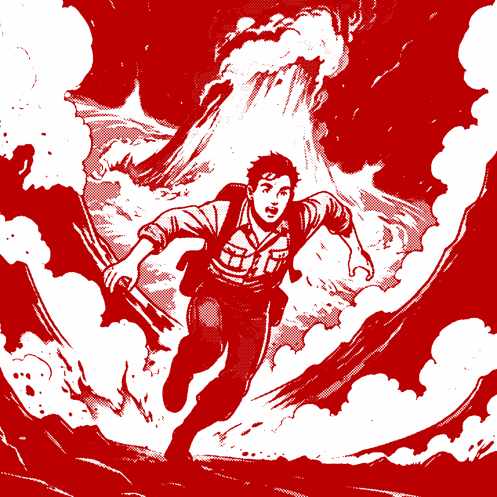

Ring of Fire is a bold hot sauce brand that takes customers on a journey of spice and discovery. Inspired by an explorer escaping the heat of an active volcano, this sauce will leave you breathing magma.
For the inital sketches, I had decided against a pyrochemist idea, a medical vial burn relief idea, and a meme-centered "im fine" fire brand, for the explorer in a volcano.
I felt this was the most playful and had the most opprotunity for expansion (such as a style map on the back for the nutritional label). Overall, I knew I wanted a comic-like feel to the brand so translating these sketches into Procreate, and then photoshop to halftone filter them, and finally into illustrator to vectorize everything.
After translating everything, this is the vectorized halftone comic image. It is quite detailed, so for the logo I decided to reduce it to the explorer reaching out of a cloud of smoke and fire.